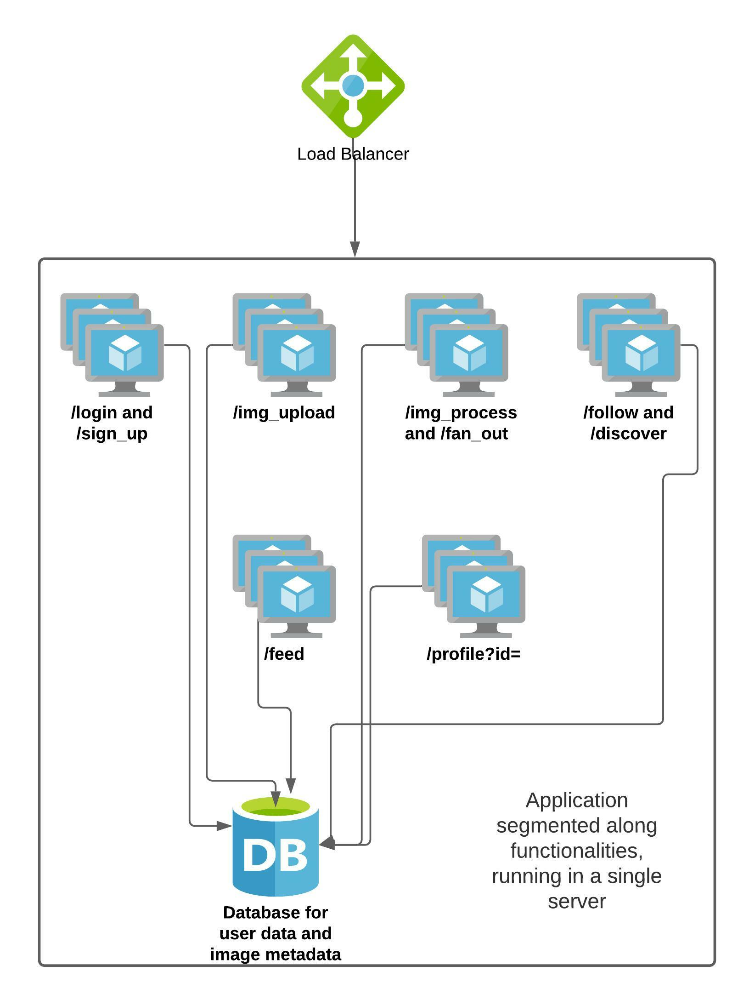

大型系統設計
設計系統通常一開始會比較抽象——我們會有大型的功能區塊需要彼此合作，並被抽象化為前端、後端及資料庫層。然而，當真正要實作系統時，尤其是身為 SRE，我們別無選擇只能以具體的尺度來思考。伺服器擁有固定的記憶體、儲存空間和運算能力。因此，我們需要思考系統的實際期望，評估需求，並將其轉換為系統中每個組件（例如網路、儲存與運算）的具體需求。這基本上是幾乎所有大型系統建構的方式。Google 的同事們將此設計系統的方式正式化為「非抽象大型系統設計」（Non abstract large system design，簡稱 NALSD）。根據 Google Site Reliability Workbook 的說法，
「實際上，NALSD 結合了容量規劃、組件隔離以及優雅系統降級等元素，而這些對於高可用的生產系統至關重要。」
我們將採用類似的方法來建立我們的系統。
應用需求
讓我們以更具體的方式定義應用需求，也就是具體的功能：
我們的照片分享應用必須讓使用者能夠
-
註冊成為會員並登入應用程式
-
上傳照片，並可選擇新增描述、標註地點及/或人物
-
追蹤平台上的其他使用者
-
查看包含所追蹤使用者照片的動態訊息（feed）
-
查看個人頁面，並管理追蹤清單
接著我們要定義應用在效能上的期望，以提升使用者體驗；同時也要定義系統的健康狀態。SLI 和 SLO 就能達成此目的。
SLI 與 SLO
Google SRE 書中定義服務等級指標（Service Level Indicator，SLI）為「一個經過仔細定義的量化衡量，衡量某個服務等級層面的某些方面」。對我們的應用，可以定義多個 SLI。舉例來說，一個指標可以是照片分享應用中載入動態訊息的回應時間。選擇合適的一組 SLI 非常重要，因為它們本質上可以透過具體數據定義系統整體的健康。應用的 SLI 由服務擁有者與 SRE 共同協商制定。
服務等級目標（Service Level Objective，SLO）定義為「由一個 SLI 衡量的服務水準目標值或目標範圍」。SLO 是我們用來藉由定義 SLI 的界線，將自己錨定在最佳使用者體驗上的方法。如果應用載入動態訊息反應很慢，使用者可能會不常打開，舉例來說，一個 SLO 可能是：至少 99% 的使用者的動態訊息需在 1 秒內完成載入。
現在我們已定義了 SLI 和 SLO，讓我們用具體的 SLI 與 SLO 水準來定義應用的可擴充性、可靠度與效能特性。
以 SLI 與 SLO 定義應用需求
以下是我們應用的一些期望：
-
使用者成功上傳圖片後，除非使用者自行刪除，圖片必須 100% 隨時可供使用者及其追蹤者觀看。
-
任一時刻應能容納至少 50,000 名獨立訪客造訪網站並瀏覽其動態訊息。
-
99% 的使用者瀏覽動態訊息時，頁面載入時間應少於 1 秒。
-
新圖片上傳後，必須在 15 分鐘內出現在上傳者追蹤者的動態訊息中。
-
使用者應能上傳數千張圖片（前提是未濫用服務）。
由於我們最終目標是學習系統設計，將會任意限制系統功能，以便專注目標與核心學習內容。
既然已定義系統功能與期望，讓我們快速繪製初步設計圖。

目前，所有功能都在單一伺服器內，該伺服器包含所有相應的 API 端點。我們將嘗試建構一套符合我們 SLO、能服務 5 萬名並發用戶以及約百萬名總用戶的系統。在過程中，我們會討論一連串概念，其中一些已於本課程第一階段見過。
注意
請注意，本節所採用的所有數字均為任意選擇。這些數字被用來示範以非抽象方式思考系統設計，並未經過效能基準測試，且與現實世界無實際相符。請勿直接用於任何真實系統設計。您應依據此處所述的指導原則，自行制訂適合的數字。資源需求估算
單台電腦
若希望在單台伺服器上執行該應用，需在此伺服器上執行圖中所有功能。我們先估算需用到哪些資源。
首先，要儲存使用者資料、上傳照片資料、追蹤者資訊及其他相關的中繼資料。我們將選擇關聯式資料庫來儲存這些資訊，例如 MySQL。當然也可以選用 NoSQL 解決方案，算資源需求方式相當；以下以關聯式資料庫示範設計表結構：
使用者資料：
UserID(int)
UserName(varchar)
DisplayName(varchar)
YearOfBirth(year)
Email(varchar)
照片資料：
PhotoID(int)
PhotoHash(varchar)
Uploadtime(datetime)
Location(varchar)
OptionalFlag(varchar)
關注關係：
Follower(int)
Followee(int)
快速估算存放 1 億名使用者所需的儲存空間。每位使用者約需 4B + 32B + 32B + 4B + 32B = 104 bytes，1 億用戶約需 10.4 GB 儲存空間。每張照片約需 4B + 20B + 4B + 32B + 4B = 64 bytes 來存放其中繼資料。假設每天上傳 100 萬張照片，光是中繼資料也需要約 64MB 的儲存空間。若以 300KB 來計算平均照片大小，照片檔案本身一天約需 300GB 儲存空間。
單一訪客登入應用時會呼叫 /get_feed 端點。我們來估算處理該請求所需的資源。假設動態訊息最初載入 5 張照片（每張約 300KB），並以惰性載入方式無限滾動，初始載入約需傳送 1.5 MB 的圖像資料給使用者。若伺服器網路以 1000 Mbps*計算， 最多容納約 (1000/8)/1.5 = 約 83 位使用者同時同一時間載入動態訊息，否則網路頻寬會飽和。若我們要一次性處理 5 萬名並發用戶的動態訊息流量，每秒需處理 1.5 * 50,000 * 8 = 600,000 Mbps（600 Gbps）的網路吞吐量（假設 5 張圖一次性在 1 秒內送出）。而且如果全部從磁碟讀取，我們幾乎會先遇到磁碟效能瓶頸。
因此，要滿足應用需求，我們需要一台約 310GB（儲存一天資料庫與照片）的伺服器，還要有約 600 Gbps 網路頻寬來服務 5 萬並發用戶，此外還要足夠的 CPU 來處理作業。顯然，單台伺服器無法負荷。
且需注意，我們在設計資料庫時，已經大幅限制資料儲存內容，實際情況通常需要儲存規模更大數量級的資訊。
雖然現實中沒有這麼強的單一伺服器，但此估算幫助我們了解資源成本。掌握這些資訊後，我們可以透過系統設計來擴充並努力達成應用目標。
* 現代伺服器甚至有多 Gigabit 網速，但這麼高階的伺服器不太可能只服務我們的應用。現代雲端提供商的 VM 也具備多 Gigabit 頻寬，但通常在達到一定限制後就會被限速。